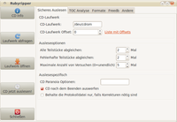

Rubyripper
Dieser Artikel wurde für die folgenden Ubuntu-Versionen getestet:
Ubuntu 16.04 Xenial Xerus
Ubuntu 14.04 Trusty Tahr
Zum Verständnis dieses Artikels sind folgende Seiten hilfreich:
Pakete aus dem Quellcode erstellen, optional
Archive entpacken, optional
Rubyripper  ist eines von vielen Programmen, mit dem sich Audio-CDs auslesen und auf die Festplatte kopieren lassen. Im Gegensatz zu seinen "Artgenossen" setzt Rubyripper jedoch konsequent auf ein möglichst akkurates Kopieren. Hierbei greifen aufwändige Maßnahmen zur Fehlererkennung und -korrektur. Der Entwickler orientierte sich an Exact Audio Copy (EAC), welches in der Windowswelt als Nonplusultra unter den CD-Rippern gilt. Wie bei ziemlich allen CD-Rippern unter Linux dient auch bei Rubyripper cdparanoia als Grundlage.
ist eines von vielen Programmen, mit dem sich Audio-CDs auslesen und auf die Festplatte kopieren lassen. Im Gegensatz zu seinen "Artgenossen" setzt Rubyripper jedoch konsequent auf ein möglichst akkurates Kopieren. Hierbei greifen aufwändige Maßnahmen zur Fehlererkennung und -korrektur. Der Entwickler orientierte sich an Exact Audio Copy (EAC), welches in der Windowswelt als Nonplusultra unter den CD-Rippern gilt. Wie bei ziemlich allen CD-Rippern unter Linux dient auch bei Rubyripper cdparanoia als Grundlage.
Die Entwicklung von Rubyripper wurde zum 10.03.2014 eingestellt. Alternative Programme sind im Artikel CDs rippen zu finden.
Hintergrund¶
Generelles¶
Das Lesen von optischen Medien (wie eben Audio-CDs) ist ein äußerst störanfälliger Vorgang. Der Laser wird nicht nur von offensichtlichen Dingen wie Kratzern oder Verschmutzungen auf der Oberfläche der Discs abgelenkt, sondern selbst von kleinsten Staubpartikeln in der Luft. Lesefehler treten also sowieso auf, die Frage ist nur, wie schwerwiegend diese sind. Verschlimmert wird die Situation zusätzlich durch die Tatsache, dass der Audio-CD-Standard nur rudimentäre Möglichkeiten zur Fehlererkennung bietet.
Maßnahmen¶
Das Vorgehen von Rubyripper gliedert sich in zwei Schritte: Der erste Schritt dient der Fehlererkennung. Hierbei wird mindestens zweimal ein Abbild der gesamten Disc bzw. der gewählten Spuren erstellt. Anschließend werden die Abbilder miteinander verglichen. Gibt es Stellen, an denen sie sich unterscheiden, traten genau dort Lesefehler auf. Im zweiten Schritt wird versucht, die aufgetretenen Fehler zu korrigieren. Dabei werden weitere Kopien erstellt, in der Hoffnung, dass der Laser diesmal nicht oder zumindest weniger stark gebrochen wird. Anschließend werden die problematischen Stellen in allen Abbildern nochmals verglichen. Wurde die vorausgesetzte Anzahl an identischen Kopien erreicht, gilt der Fehler als korrigiert. Gelang dies nicht, wird jenes Abbild behalten, das die wenigsten Abweichungen zu den anderen aufwies.
Ärgerlicherweise ist es nicht möglich, einfach nur die problematischen Stellen erneut zu kopieren, da bei kleinen Datenmengen die Gefahr besteht, dass das Laufwerk stillschweigend auf seinen Zwischenspeicher zugreift, statt die Disc noch einmal zu lesen.
Installation¶
Rubyripper befindet sich nicht in den offiziellen Paketquellen. Daher muss entweder eine Fremdquelle verwendet oder das Programm selbst aus dem Quelltext übersetzt werden.
Fremdquelle¶
GetDeb stellt eine Fremdquelle zur Verfügung: Rubyripper
Hinweis!
Zusätzliche Fremdquellen können das System gefährden.
Manuell¶
Bei dieser Art der Installation ist die Oberfläche von Rubyripper auf Englisch, da ein Fehler in der aktuellen Version 0.6.2 das Aktivieren der Übersetzungen verhindert.
Um die aktuellste Version manuell zu kompilieren [1] und anschließend mit vollem Funktionsumfang nutzen zu können, werden folgende Pakete benötigt:
cd-discid
cdparanoia
cdrdao
flac
lame
mp3gain
normalize-audio
ruby-gnome2
ruby
sox
vorbisgain
 mit apturl
mit apturl
Paketliste zum Kopieren:
sudo apt-get install cd-discid cdparanoia cdrdao flac lame mp3gain normalize-audio ruby-gnome2 ruby sox vorbisgain
sudo aptitude install cd-discid cdparanoia cdrdao flac lame mp3gain normalize-audio ruby-gnome2 ruby sox vorbisgain
Der Quelltext findet sich auf der Projektseite. Nachdem dieser entpackt [2] wurde und man in dessen Verzeichnis gewechselt hat, sollte das configure-Skript mit folgenden Optionen ausgeführt werden [3]:
./configure --enable-gtk2 --enable-cli
Hierbei werden sowohl der GTK- als auch der Shell-Client kompiliert. Ersteres sollte in aktueller Version (0.6.2) immer aktiviert werden, da einige Optionen noch nicht über den Shell-Client konfiguriert werden können. Abschließend kompilieren und installieren.
Verwendung¶
Mit grafischer Oberfläche¶
Hinweis:
Die nachfolgende Beschreibung der Optionen bezieht sich sowohl auf die deutsche (als Fremdpaket) als auch die englische Fassung (selbst kompiliert).
Nach erfolgreicher Installation findet man das Programm bei Ubuntu-Varianten mit einem Anwendungsmenü unter "Multimedia -> Rubyripper" oder "Unterhaltungsmedien -> Rubyripper". Ansonsten gibt man den Programmnamen in der Dash ein.
Der Programmstart erfolgt mit einer kleinen Verzögerung, da Rubyripper das Laufwerk auf eine vorhandene Audio-CD testet. Befindet sich bereits eine Audio-CD im (richtigen) Laufwerk, öffnet Rubyripper direkt das entsprechende Menü. Ist die automatische freedb-Abfrage aktiviert, werden die Informationen zur CD von dort geladen. Des Weiteren finden sich zwei Optionen in diesem Menü:
"CD info einfrieren" ("Freeze disc info"): Nützlich, wenn ein Album aus mehreren Discs besteht. Beim Einlegen der nächsten Disc werden die Felder nicht geleert.
"CD als "Verschiedene Künstler" markieren" ("Mark disc as various artist"): Aktiviert später das entsprechende Muster bei der automatischen Benennung der gerippten Datei(en).
Auf der linken Seite befinden sich die wichtigsten Funktionen:
"Einstellungen" ("Preferences"): Einstellungen aufrufen.
"Laufwerk abfragen" ("Scan drive"): Disc erneut im Laufwerk suchen.
"Laufwerk öffnen" ("Open tray"): Einschub des Laufwerks auswerfen.
"CD jetzt auslesen!" ("Rip cd now!"): Kopiervorgang starten.
"Schließen" ("Exit"): Rubyripper beenden.
Einstellungen¶
Sicheres Auslesen (Secure Ripping)¶
Achtung!
Kopiert man häufig Audio-CDs, sollte bei den folgenden Einstellungen bezüglich der Anzahl an Kopiervorgängen bedacht werden, dass optische Laufwerke (CD-/DVD-/BluRay-ROMs) zumeist sehr schnell verschleißen. Nicht umsonst legt Rubyripper automatisch eine Zwangspause ein, wenn das Kopieren länger als 30 Minuten dauert.
Obendrein kann bei zu vielen Kopiervorgängen der selbe Fehler mehrfach auftreten, so dass Rubyripper beim Vergleichen dann fälschlich von einer erfolgreichen Korrektur ausgeht.

"CD-Laufwerk" ("Cdrom device"): Die Gerätedatei des Laufwerks, welches zum Rippen benutzt werden soll. Gibt es nur eines, sollte
/dev/cdromreichen.
"CD-Laufwerk Offset" ("Cdrom offset"): Der Markt ist überschwemmt mit CD-/DVD-Laufwerken, die unsauber arbeiten. An dieser Stelle kann ein spezifischer Korrekturwert eingestellt werden, um den Kopiervorgang von Anfang an sicherer zu machen. Eine Liste
mit Werten für verschiedene Laufwerkstypen hilft bei dieser Option.
"Alle Teilstücke abgleichen" ("Match all chunks"): Hier findet die Fehlererkennung statt. Festgelegt wird die Anzahl an Kopien, die in jedem Fall erstellt- und anschließend miteinander verglichen werden. Sind die Kopien alle identisch zueinander, gilt die Disc als fehlerfrei.
"Fehlerhafte Teilstücke abgleichen" ("Match errorneous chunks"): Die Fehlerkorrektur. Gab es beim ersten Durchgang Stellen, an denen sich die Kopien unterschieden haben, wird die angegebene Anzahl an zusätzlichen Kopien erstellt. Gelang es danach immer noch nicht genügend identische Kopien zu erstellen, beginnt die Fehlerkorrektur von vorne.
"Maximale Anzahl von Versuchen"("Maximum trials"): Hier wird festgelegt, nach wie vielen Versuchen der Fehlerkorrektur endgültig aufgegeben wird.
"CD Paranoia Optionen" ("Pass cdparanoia options"): Eigene Optionen an cdparanoia weiterreichen.
"CD nach dem Beenden auswerfen" ("Eject cd when finished"): Disc automatisch auswerfen, wenn der Kopiervorgang beendet ist... oder abgebrochen werden musste.
"Behalte die Protokolldatei nur, wenn Korrekturen notwendig sind" ("Only keep logfile if correction is needed"): Es wird standardmäßig ein Protokoll erstellt. Mit dieser Option wird es aber nur dann gespeichert, wenn es Probleme gab.
TOC Analyse (TOC analysis)¶
"Lies versteckte Audio-Sektoren aus" ("Rip hidden audio sectors"): Hidden Tracks finden und mitkopieren. Die Anzahl der Sekunden legt fest, ab wann Rubyripper von einem versteckten Titel ausgeht. Je nach Laufwerkstyp und Disc, kann sowohl das Ein- als auch das Abschalten dieser Funktion Probleme verursachen. Siehe auch Problembehebung.
"Erstelle Cuesheet" ("Create cuesheet"): Eine Cuesheet-Datei erstellen, damit der Audioplayer die Datei(en) später genau so abspielt, wie es der CD-Spieler getan hätte.
"Rippe die CD als eine Datei" ("Rip CD to single file"): Es wird nicht jede Spur in eine einzelne Datei übertragen, sondern statt dessen ein Abbild der kompletten Disc erstellt. In Kombination mit einem Cuesheet wird so ein völlig authentisches Abspielverhalten erreicht.
"Verarbeiten von Pregaps außer Track 1" ("Handling pregaps other than track 1"): Werden die Spuren in einzelne Dateien übertragen, muss entschieden werden, was mit den Pregaps geschehen soll. Wird kein Cuesheet benutzt oder sollen die gerippten Tracks später mit der AccurateRip-Datenbank
abgeglichen werden, sollte das Pregap angehängt werden (Append). Mit Cuesheet erreicht man mit Voranstellen (Prepend) ein authentischeres Abspielverhalten.
"Behandle Tracks mit Pre-Emphasis" ("Handling tracks with pre-emphasis"): Legt fest, wie die Pre-Emphasis übertragen wird. Entweder wird das Audiomaterial selbst korrigiert (
Correct pre-emphasis tracks with sox) oder es wird ein Hinweis im Cuesheet vermerkt (Save the pre-emphasis tag in the cuesheet).
Formate (Codecs)¶
Hier wird festgelegt, mit welchem Audio-Codec das kopierte Material komprimiert werden soll. Die gewünschten Parameter werden an den jeweiligen Enkoder weitergereicht.

"Audio-Formate auswählen" ("Audio formats"): zur Auswahl stehen
Weitere Optionen:
"Anzahl zusätzlicher Kodier-Threads" ("Number of extra encoding threads"): Besitzt man einen Mehrkernprozessor, sollte man die Anzahl der Kerne hier eintragen. Da keiner der verfügbaren Enkoder parallelisiert arbeitet, nützt diese Funktion nur dann, wenn das kopierte Material in mehrere Formate umgewandelt werden soll.
"m3u Playlist generieren" ("Create m3u playlist"): Eine Playlist passend zu den erstellten Dateien generieren.
"Leerzeichen in Dateinamen durch Unterstriche ersetzen" ("Replace spaces in underscopes in filenames"): In den Dateinamen werden Unterstriche (_) statt Leerzeichen ( ) benutzt. Äußerst sinnvoll, wenn man häufig Dateien im Terminal verwaltet.
"Großbuchstaben in Dateiname in Kleinbuchstuben umwandeln" ("Downsize all capital letters in filenames"): Alle Dateinamen werden kleingeschrieben.
"Standardlautstärkeabgleich" ("Normalize to standard volume"): Die Lautstärke wird mittels Replay-Gain-Analyse angepasst. Entweder wird der ermittelte Wert im Tag der enkodierten Datei(en) gespeichert, oder das Audiomaterial wird vor dem Umwandeln normalisiert. Ersteres lässt das Audiomaterial unverfälscht, der Player muss jedoch Replay Gain unterstützen. Letzteres funktioniert immer, das Material ist aber eben nicht mehr originalgetreu.
Freedb¶
"Freedb Abfrage einschalten" ("Enable freedb metadata fetching"): Informationen zur Disc werden automatisch aus der Freedb geladen.
"Immer ersten Freedb Treffer verwenden" ("Always use first freedb hit"): Zu manchen Discs gibt es mehrere Einträge in der Freedb. Hiermit wird immer der erste benutzt.
Andere (Other)¶
Hier wird festgelegt, wie die Dateien benannt werden sollen. Dazu benutzt man Variablen, die mit einem Klick auf das Pluszeichen bei "Optionen für "Dateinamen-Schema" anzeigen" ("Show options for file naming sheme") erläutert werden.
"Basisverzeichnis" ("Base directory"): Das Arbeitsverzeichnis, in welchem die Dateien und Verzeichnisse standardmäßig angelegt werden sollen. Empfehlenswert ist ~/Musik/.
"Standard": Das Schema für den Regelfall - eine Disc, auf der nur ein Interpret vertreten ist und von der die Spuren in einzelne Dateien kopiert werden.
"Verschiedene Künstler" ("Various Artists"): Das Schema für Zusammenstellungen mit mehreren Interpreten ("CD als "Verschiedene Künstler" markieren", siehe oben).
"Einzeldatei-Abbild" ("Single file"): Zuletzt noch das Schema für den Fall, dass ein komplettes Disc-Abbild (Image) erstellt wird, anstelle einzelner Dateien.
Tipps¶
Die Fehlererkennung ist relativ einfach. Mehr als ca. 3 Kopierdurchgänge erscheinen hier unsinnig.
Lesefehler, die sich nicht korrigieren lassen, müssen nicht zwangsläufig hörbar sein. Übertrieben viele Durchläufe bei der Korrektur steigern nur die Wahrscheinlichkeit, dass Fehler mit der Zeit übersehen werden.
Die maximale Anzahl an Kopiervorgängen sollte ca. 3x so hoch sein wie der Wert, der bei der Korrektur gesetzt wurde.
Wird Rubyripper eingesetzt, um eine CD-Sammlung dauerhaft zu archivieren, kann der verlustfreie Codec FLAC von besonderem Interesse sein. In den Einstellungen unter TOC-Analyse sorgen außerdem die Funktionen "Rippe die CD als eine Datei" und "Erstelle Cuesheet" dafür, dass der komplette Inhalt der Disc (samt Pausen etc.) originalgetreu übernommen wird. Siehe dazu Exaktes CD-Abbild rippen.
Kommandozeile¶
Die Kommandozeilenversion enthält einen speziellen Anfänger-Modus, bei dem der Benutzer mit Fragen und Hinweisen durch den Prozess geführt wird. Der Befehl dazu lautet:
rrip_cli -v
Problembehebung¶
Absturz in 0.6.2, getdeb¶
Die aktuelle getdeb-Version Version stürzt unter 16.04 ggf. mit längeren Meldungen ab, die GUI-Version mit ausführlichem Report, die CLI-Version mit etwas übersichtlicherer Meldung, die mit Folgendem beginnt:
/usr/lib/ruby/1.8/rr_lib.rb:1659:in `gsub!': incompatible encoding regexp match (UTF-8 regexp with ASCII-8BIT string) (Encoding::CompatibilityError)
Leider ist eine Lösung nicht bekannt; man kann sich aber mit einer neueren Version behelfen. Dazu das Source-Archiv von der Rubyripper-Seite  herunterladen und entpacken. Das Programm lässt sich nicht erstellen, aber im Verzeichnis bin/ finden sich fertige Versionen, rubyripper_cli und rubyripper_gtk2, die man im Verzeichnis direkt via Terminal starten kann. Zuvor sollte man die von einer anderen Version erstellte Konfigurationsdatei settings in ~/.config/rubyripper umbenennen oder löschen.
herunterladen und entpacken. Das Programm lässt sich nicht erstellen, aber im Verzeichnis bin/ finden sich fertige Versionen, rubyripper_cli und rubyripper_gtk2, die man im Verzeichnis direkt via Terminal starten kann. Zuvor sollte man die von einer anderen Version erstellte Konfigurationsdatei settings in ~/.config/rubyripper umbenennen oder löschen.
Probleme mit der GTK-Oberfläche¶
Der GTK-Client von Rubyripper weist in der Version 0.6.2 sehr viele Bugs auf. So werden oftmals ausgefüllte Metadaten-Felder nicht in die Tags übernommen oder die Fortschrittsbalken beim Rippen/Umwandeln frieren ein. Es ist zu empfehlen, die grafische Variante nur zum Konfigurieren zu benutzen. Zum Rippen sollte auf die Kommandozeile ausgewichen werden. Die Dateien können auch im Nachhinein getaggt werden, z.B. mit Programmen wie Easytag.
Rubyripper arbeitet extrem langsam¶
Abgesehen von den Kopiervorgängen gibt es auch Fehlerberichte darüber, dass das Programm allgemein wesentlich schneller arbeitet, wenn es über die Kommandozeile bedient wird.
cdparanoia stürzt ab oder die angelegten Audiodateien sind leer¶
Dieses Problem tritt auf, wenn die Funktion zum Kopieren von Hidden-Tracks aktiviert ist, das Laufwerk aber kein Lesen außerhalb des normalen Bereichs einer Audio-CD unterstützt und somit die Hidden-Tracks gar nicht erreichen kann. Da es sich ein Hardwareproblem handelt, hilft nur, die Funktion zu deaktivieren und auf die versteckten Titel zu verzichten.
Lieder beginnen zu früh, wenn ein Cuesheet benutzt wird¶
Dieses Problem wiederum kann bei manchen CDs auftreten, wenn die Funktion zum Kopieren von Hidden-Tracks abgeschaltet wurde und zugleich die CD als Abbild samt Cuesheet gerippt werden soll. Hierbei werden einige Sektoren am Anfang übersehen, wodurch die Titel alle etwas nach vorne rücken. Die Datei stimmt dann nicht mehr mit den originalen Zeitmarken im Cuesheet überein.
Links¶
Rubyripper
- Artikel bei HydrogenaudioRubyripper - Wikipedia
RubyRipper
im engl. Ubuntu-WikiCDs rippen
 Übersichtsseite
Übersichtsseite
- Erstellt mit Inyoka
-
 2004 – 2017 ubuntuusers.de • Einige Rechte vorbehalten
2004 – 2017 ubuntuusers.de • Einige Rechte vorbehalten
Lizenz • Kontakt • Datenschutz • Impressum • Serverstatus -
Serverhousing gespendet von